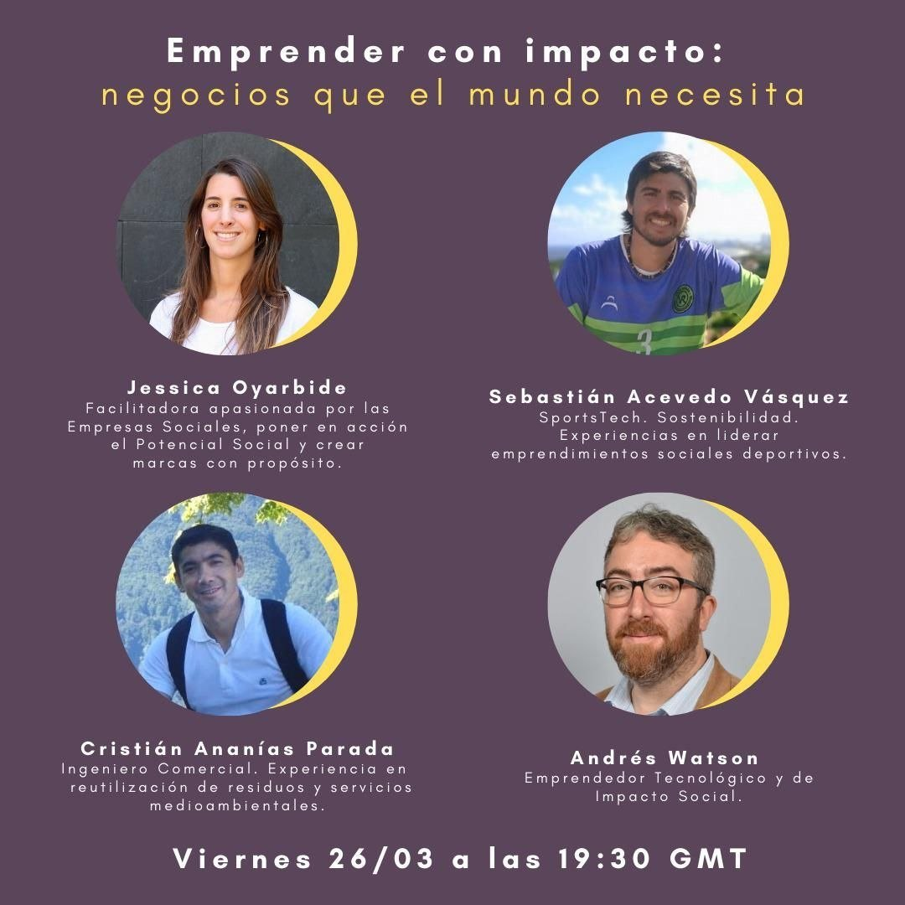

mídia / direito ao esporte
O esporte como direito desde a inovação.
A melhor peça do lote. Serve para uma seção de mídia ou para sustentar a tese pública do trabalho.
prova 04 / credibilidade pública
Estas imagens não são hero de manifesto. Elas funcionam como prova pública: entrevistas, mídia, painéis, convites e aparições que confirmam uma presença no campo.
Função. Provar presença pública.
Uso. Timeline, mídia, rodapé de autoridade.
Cuidado. Não usar como imagem principal da home.
quatro provas
mídia / direito ao esporte
A melhor peça do lote. Serve para uma seção de mídia ou para sustentar a tese pública do trabalho.

entrevista / reinserção social
Boa para bloco de imprensa e projetos sociais. Precisa legenda contextual, não estética de capa.

painel / impacto
Funciona em timeline de participações, não como fotografia editorial.
rádio / agenda
Boa para arquivo de presença pública, com crédito à emissora.
decisão editorial
Estas imagens não substituem as provas visuais de home. Elas criam uma camada de credibilidade para uma futura página de trajetória, imprensa ou autoridade pública.